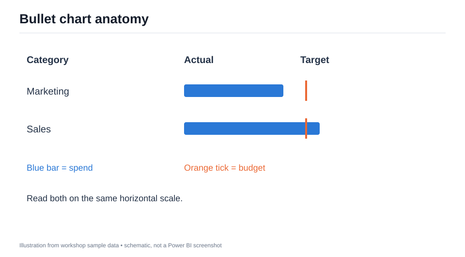
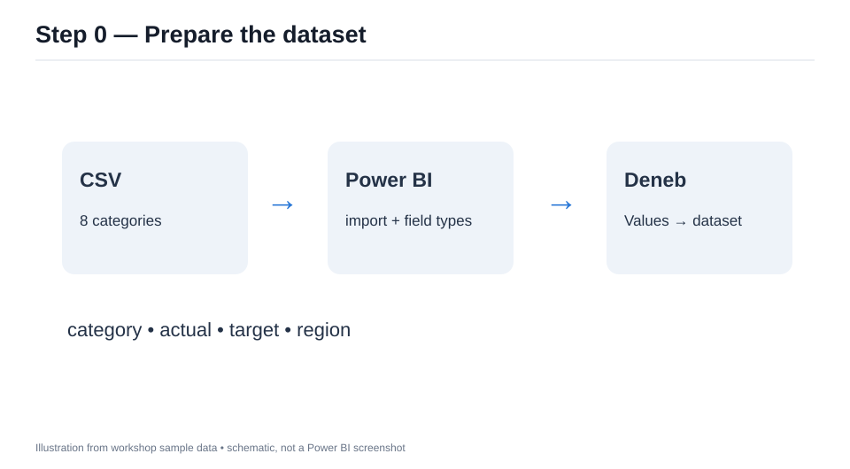
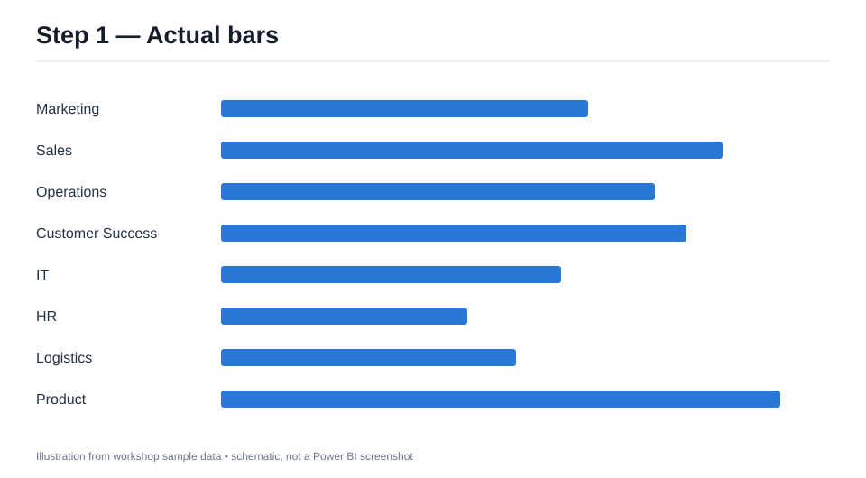
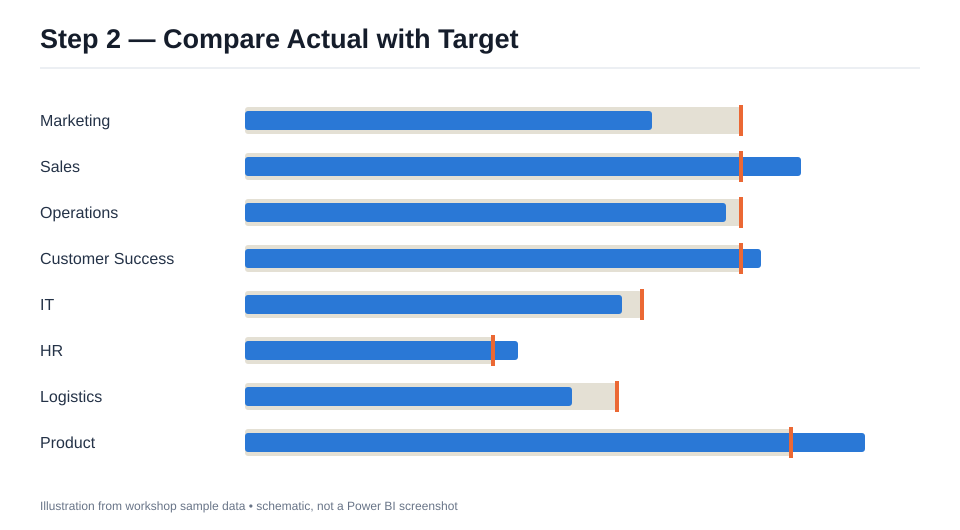
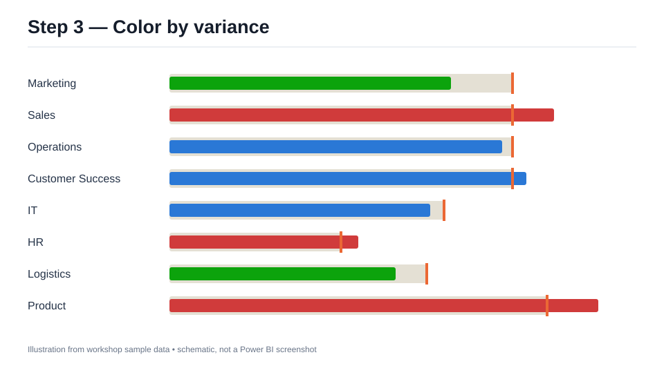
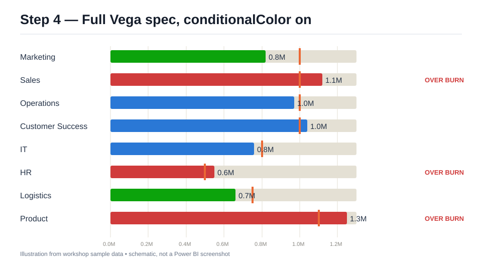

สร้าง Bullet Chart ด้วย Deneb ใน Power BI
eBook และ workshop แบบค่อยเป็นค่อยไป
กลุ่มผู้อ่าน: ผู้ใช้ Power BI ที่เคยสร้างกราฟพื้นฐานและต้องการควบคุมหน้าตาของ visual ด้วย JSON
เวลา: ประมาณ 60–90 นาที
ผลลัพธ์: จากแท่ง Actual ธรรมดา ไปสู่ Bullet Chart ที่มี Target, สีตาม variance และสเปก Vega ฉบับเต็มที่ถอดแนวคิดจาก custom visual เดิม
ภาพประกอบทุกภาพเป็นภาพจำลองจากข้อมูล workshop เพื่อแสดงผลที่ควรเห็นในแต่ละขั้น เมนูจริงอาจต่างตามรุ่นของ Power BI และ Deneb
แผนการเรียน
| ขั้น | สิ่งที่เพิ่ม | ไฟล์ |
|---|---|---|
| 0 | นำเข้าข้อมูลและจับคู่ฟิลด์ | data/bullet_workshop.csv |
| 1 | แท่ง Actual พื้นฐาน | specs/01-bars.vl.json |
| 2 | แถบ Target และขีดเป้าหมาย | specs/02-target.vl.json |
| 3 | คำนวณ variance และใช้สี | specs/03-variance.vl.json |
| 4 | ใช้ Vega spec ฉบับเต็มจาก custom visual เดิม | ../source/bulletChart/spec.json |
แนวคิดก่อนเริ่ม
Bullet chart แสดง Actual เป็นแท่งแนวนอน และ Target เป็นขีดตั้ง การวางสองค่าไว้บนสเกลเดียวกันช่วยให้เห็นว่าแต่ละหมวดอยู่ต่ำหรือสูงกว่าเป้าหมายเท่าไร ใน workshop นี้ถือว่าตัวเลขเป็น งบใช้จ่าย จึงตีความ Actual มากกว่า Target ว่าใช้งบเกิน; ถ้าใช้กับยอดขาย ความหมายของสีและสถานะต้องเปลี่ยนตามโจทย์
Deneb รับฟิลด์จากช่อง Values ของ visual แล้วส่งให้สเปกผ่าน dataset ชื่อ dataset ชื่อฟิลด์ใน JSON ต้องตรงกับชื่อที่แสดงใน Values เอกสาร Deneb: Dataset

ขั้น 0 — เตรียมข้อมูลและ Deneb
- ใน Power BI Desktop เลือก Get data → Text/CSV แล้วเปิด
workshop/data/bullet_workshop.csvจากรากโปรเจ็กต์ - ตรวจชนิดข้อมูล:
categoryและregionเป็น Text;actualและtargetเป็น Whole number จากนั้น Load - เพิ่ม Deneb จาก AppSource ลงในรายงานตามขั้นตอนของ Microsoft Import a Power BI visual
- วาง
category,actual,target,regionลงในช่อง Values ของ Deneb ตรวจชื่อที่แสดงในช่องนี้ให้เป็นcategory,actual,target,regionทุกตัวอักษร หาก Power BI แสดงSum of actualหรือSum of targetให้เปลี่ยนชื่อฟิลด์ใน Values เป็นactualและtarget(เช่น ดับเบิลคลิกชื่อฟิลด์เพื่อ Rename) หรือเลือก Don't summarize เมื่อเหมาะกับข้อมูลหนึ่งแถวต่อหมวด ทั้งสองค่าต้องยังเป็นตัวเลข - สร้างสเปกใหม่โดยเลือก Vega-Lite และเทมเพลตว่าง เปิด editor เพื่อวาง JSON ของขั้น 1
ตรวจสอบ: Data pane ของ Deneb ควรมี 8 แถว และเห็นฟิลด์ category, actual, target, region หากเป็นศูนย์แถว ให้ตรวจตัวกรองและ Values ก่อนแก้ JSON

ขั้น 1 — วาด Actual ด้วย Vega-Lite
เปิด workshop/specs/01-bars.vl.json คัดลอกทั้งไฟล์ลง editor แล้ว Apply สเปกใช้ data: {"name":"dataset"} เพื่อผูกข้อมูลจาก Power BI, วาง category ที่แกน Y และ actual ที่แกน X
"data": {"name": "dataset"},
"mark": {"type": "bar", "color": "#2A78D6"}
ลองทำ: ชี้แท่ง Marketing จะเห็น Actual 820,000; Sales 1,120,000 เปลี่ยนตัวกรอง region แล้วจำนวนแท่งควรเปลี่ยน
ผ่านเมื่อ: มี 8 แท่งแนวนอน ไม่มีแจ้งเตือน field missing และ tooltip แสดง category กับ actual

ขั้น 2 — เพิ่ม Target
แทน JSON ทั้งหมดด้วย workshop/specs/02-target.vl.json ขั้นนี้ใช้ layer ซ้อน 3 ชั้น: แถบสีเทาเป็น Target, แท่งน้ำเงินเป็น Actual, ขีดสีส้มเป็น Target ที่ตำแหน่งเดียวกัน
"layer": [
{"mark": {"type": "bar", "color": "#E4E0D4", "size": 25}},
{"mark": {"type": "bar", "color": "#2A78D6", "size": 17}},
{"mark": {"type": "tick", "color": "#EB6834", "thickness": 3, "size": 32}}
]
ในไฟล์จริง แต่ละ layer กำหนด x.field ให้เป็น target หรือ actual ด้วย แกน X ร่วมกันจึงเปรียบเทียบได้ตรงตำแหน่ง
ลองทำ: Sales และ Product ควรมีแท่ง Actual เลยขีด Target; Marketing ควรอยู่ก่อนขีด Target
ผ่านเมื่อ: ทุกแถวมีแถบเทา แท่ง Actual และขีดสีส้ม

ขั้น 3 — เพิ่ม variance และสี
แทน JSON ด้วย workshop/specs/03-variance.vl.json สเปกเพิ่ม transform:
variance % = (actual - target) / target × 100
ถ้า Target เป็น 0 ให้ variance เป็น null และแสดง N/A แทนการหารด้วยศูนย์ กติกาสีสำหรับข้อมูล งบใช้จ่าย คือ ต่ำกว่า −5% เป็นเขียว, ตั้งแต่ −5% ถึงต่ำกว่า +10% เป็นน้ำเงิน, ตั้งแต่ +10% เป็นแดง
ลองคำนวณ: Marketing = (820,000 − 1,000,000) / 1,000,000 = −18.0% สีเขียว; Sales = +12.0% สีแดง; Operations = −3.0% สีน้ำเงิน
ผ่านเมื่อ: Tooltip แสดง Variance และสีของสามหมวดตัวอย่างตรงตามข้างต้น ตรวจค่าขอบด้วย: IT = −5.0% ยังเป็นน้ำเงินเพราะเงื่อนไขเขียวใช้ค่าน้อยกว่า −5; HR = +10.0% เป็นแดงเพราะเงื่อนไขแดงเริ่มตั้งแต่ +10

ขั้น 4 — ไปสู่สเปก Vega ฉบับเต็ม
สเปกเดิมใน source/bulletChart/spec.json เป็น Vega ไม่ใช่ Vega-Lite เพิ่ม Deneb visual ตัวใหม่ เลือก provider เป็น Vega แล้วลาก category, actual, target (และ region หากต้องการใช้กรอง) ลงใน Values เปลี่ยนชื่อที่แสดงให้ตรงกับ JSON จากนั้นเปิด Edit → Spec เพื่อวาง JSON ทั้งไฟล์ ตัวเลือก tooltip1 ถึง tooltip4 ใส่เพิ่มได้ภายหลัง
สเปกเต็มเพิ่มสิ่งที่สเปกสอนพื้นฐานยังไม่มี: การจัดพื้นที่ตามขนาด visual, label ตัวเลข Actual, status, หน่วย K/M/B, จำนวนแถวสูงสุด, animation และการเลือกแถว แถบเทาในสเปกเต็มเป็น track พื้นหลังเต็มความกว้าง และ Target แสดงด้วยขีดสีส้ม ต่างจากขั้น 2–3 ที่แถบเทายาวถึง Target ค่า variance % อยู่ใน tooltip ส่วนตัวเลขข้างแท่งเป็น Actual รายละเอียดการตั้งค่าอยู่ที่ source/bulletChart/README.md ค่าเริ่มต้นจำกัด 10 แถว; ข้อมูล workshop มี 8 แถวจึงแสดงครบ
ปรับแต่งแรก: ใน signals เปลี่ยน "conditionalColor" จาก false เป็น true เพื่อให้แท่งใช้กติกาสีจากขั้น 3 แล้วลองเปลี่ยน "statusHighText" จาก "OVER BURN" เป็น "เกินงบ" หากต้องการภาษาไทย
ตั้งค่า interactivity: ที่ Settings → Vega → Power BI Interactivity เปิด Expose cross-filtering values for dataset rows เพื่อให้คลิกเลือกแถวแล้ว cross-filter visual อื่นได้ ปล่อย Tooltip Handler ไว้ที่ On ตามค่าเริ่มต้น
ทดสอบใน Power BI: ตรวจ tooltip, การเลือกแถวและ cross-filter กับ visual อื่น, ขนาด visual แคบ/กว้าง และตัวกรอง region ตามคำแนะนำใน README ของสเปกเต็ม การแสดงใน Power BI Desktop ยังต้องตรวจจริงก่อนเผยแพร่รายงาน ภาพประกอบด้านล่างจำลองผลเมื่อเปิด conditionalColor แล้ว และยังใช้ข้อความสถานะเริ่มต้น OVER BURN

ภาพนี้จำลองสเกล 0–1.3M และเส้นกริดทุก 0.2M เพื่ออธิบายตำแหน่งแท่งกับ Target; ระยะจริงใน Power BI อาจเปลี่ยนตามขนาด visual และการเลือก tick ของ Vega
สรุปและแบบฝึกต่อยอด
- ในขั้น 4 แก้
actualของ Product ใน CSV เป็น1100000ให้เท่ากับ Target แล้วกด Refresh ใน Power BI ผลควรเป็น variance+0.0%, แท่งสีน้ำเงินเมื่อเปิดconditionalColorและไม่มีป้าย status เพราะstatusMidTextว่างโดยค่าเริ่มต้น - เพิ่มแถวที่
targetเป็น0ใน CSV แล้วกด Refresh ทดลองในขั้น 3 หรือ 4 Tooltip ควรแสดง variance เป็นN/A(ขั้น 4 แสดงร่วมกับค่าผลต่าง) และแท่งเป็นสีน้ำเงิน - ปรับ threshold เป็น −4% และ +11%: ในขั้น 3 แก้เงื่อนไข
< -5และ>= 10ใน03-variance.vl.json; ในขั้น 4 แก้ทั้งvarianceThreshold1/2สำหรับสี และstatusThreshold1/2สำหรับสถานะในspec.jsonจากนั้นอธิบายว่า IT (−5.0%) เปลี่ยนจากน้ำเงินเป็นเขียว และ HR (+10.0%) เปลี่ยนจากแดงเป็นน้ำเงิน หากแก้ threshold เพียงชุดเดียว สีและสถานะอาจไม่ตรงกัน ค่าเริ่มต้นstatusLowTextว่าง จึงยังไม่มีป้ายใหม่ที่ IT ส่วนป้ายOVER BURNของ HR จะหายไป - หากใช้ข้อมูลยอดขาย ให้กำหนดสีและข้อความสถานะใหม่ก่อนใช้กราฟตัดสินใจ
ขอบเขตของการถอด custom visual
สเปก Vega ฉบับเต็มถอดหน้าตาและพฤติกรรมหลักจาก custom visual bulletChart ที่มีอยู่ในโปรเจ็กต์ แต่ไม่มีระบบ license, pane ตั้งค่าแบบเดิม หรือ scrolling ภายในกราฟ เมื่อแถวแน่น สเปกจะย่อความหนาแท่ง รายละเอียดความต่างอื่น ๆ อยู่ใน source/bulletChart/README.md